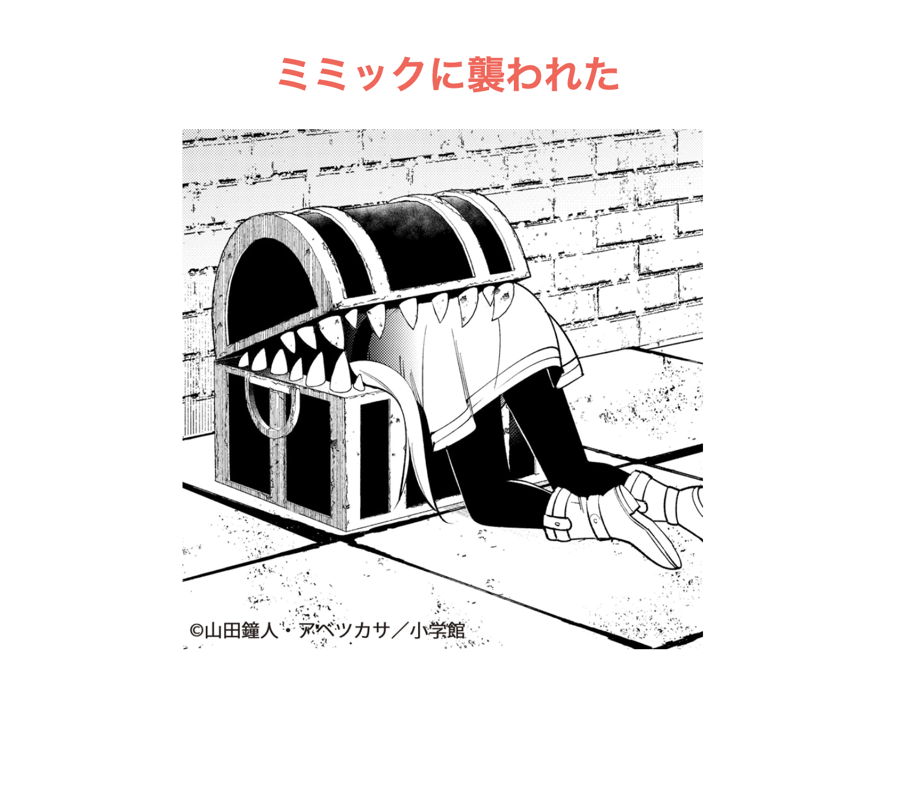

あみだくじ
【内容】
縦線を2から9本、
横線を指定された数字の範囲内で指定する。
その後ゲームがスタートし、宝につながる道を10秒以内に選択する。
ハズレの道や10秒以内に選択できないとミミックに襲われてしまう、
という仕様のあみだくじゲーム。
【構成】
(jsp)
縦線を指定する
※あみだくじの箇所はテーブルタグを駆使して作成する
↓
(servlet)
指定の縦線をセッションスコープに登録
宝とミミック群をリストで作成しセッションスコープに登録
↓
(jsp)
横線を指定する。
※スタートからゴールまでtrが25個で設定しているため、
横線は1列につき最大25個引くことができる。
ただし1列目に引くとスタート地点と重なってしまうため、
そこには引けない仕様にしたため最大24個。
さらに横線は隣接しない設定とした。
↓
(servlet)
横線を上記の仕様踏まえてチェック
・縦線が4本の場合は横線は24本以下
・縦線が7本の場合は横線は48本以下
・縦線が8,9本の場合は横線は72本以下
と制限し、超えていた場合は注意文が表示してやりなおし。
int型の[①26][②縦線の数]の配列を作成し、
デフォルト値を0、横線がある場合は1を格納する。
26番目の箇所のみ宝(2)ミミック(3)を格納し、
下の工程はすべて25番目までを範囲とする。
横線がない箇所があると興醒めなので、
縦線すべてに1つずつ横線をランダムに割り当てる。
その後①②をランダムに作成して、
その箇所が0かつ隣接に1がいなければ1を格納するを
指定の横線の数が生成できるまで繰り返す。
int[1][0] == 1 なら横にずれるといった
迷路を進むような作業を2重ループを使って行い、
スタート地点と終着地点をMapを使って紐づける。
そしてあみだ配列とMapをセッションに登録する。
↓
(jsp)
JavaScriptを使って10秒の制限時間を表示。
正解だとおもう数字をクリックすると
宝 or ミミック の結果が表示される。
制限時間が過ぎた場合はミミックとなる。
【工夫や学び】
配列を作ってからListに変換したり、
Mapを使ってみたりとこれまで使ったことない知識を採用してみた。
また「いじわる数字選択ゲーム」の経過時間を応用することで制限時間を表示することができ、
そこから時間経過によってアクションを起こすことが実現できた。
とても多くの学びを得ることができ、さらに描いた空想がいくつも実現できて楽しい開発であった。
